3 智慧機邊-詳細操作說明
- 基於智慧機邊設備的操作流程與說明，包含機邊的連線設定、與控制器的連線設定、刀具安裝的流程規範、進行加工前的工單設定、加工中連線的UI視窗和加工之後的檔案輸出等操作流程，以下說明。
機邊連線設定
將機邊設備的ETH0端口以有線連接至路由器的LAN端口(如圖 7)。
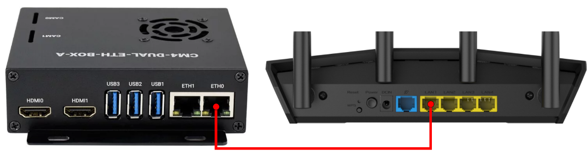
圖 7、機邊ETH0端口連接路由器
將機邊設備的ETH1端口以有線連接至機台的RJ45端口(如圖 8)。
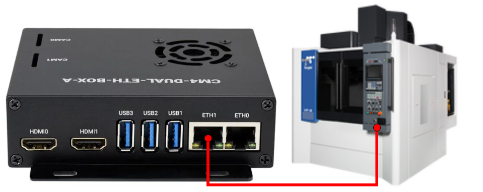
圖 8、機邊ETH1端口連接機台
電腦以有線方式連接至路由器的LAN端口(如圖 9)，或是使用WiFi連線(如圖 10)，名稱為ST_Route，密碼為1234567890。
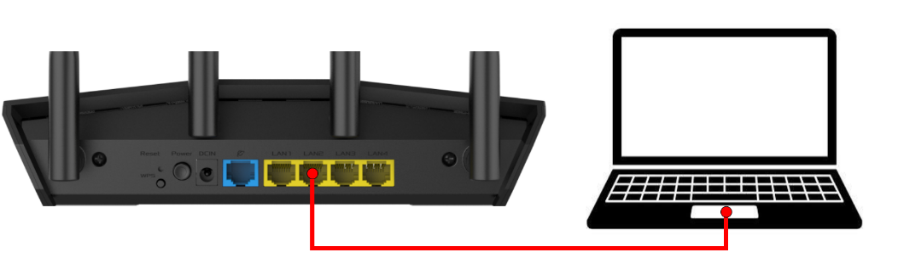
圖 9、連接路由器連接電腦
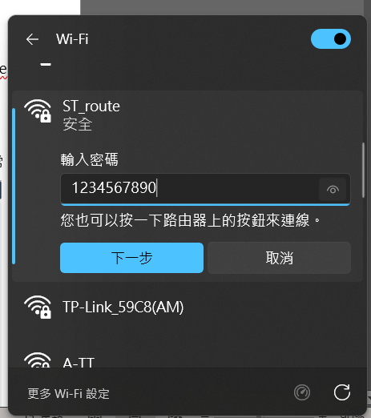
圖 10、電腦使用WiFi連線
在電腦的網頁上輸入網址http://10.0.0.103:8051/，則視窗會出現如圖 11，表示連線正常。
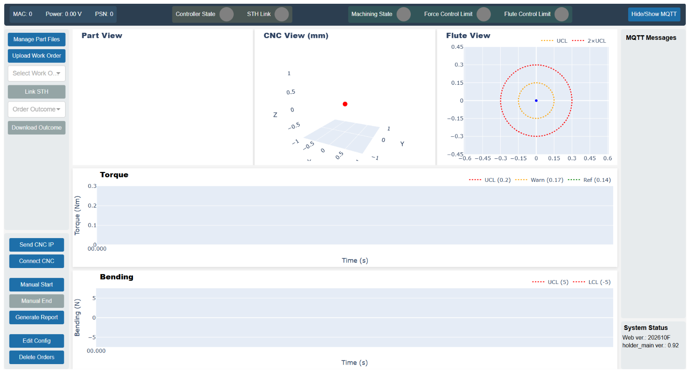
圖 11、網頁UI視窗
刀具安裝流程
確認刀具的刀刃位置，以球頭刀的後刃的切線延伸為主(如圖 12)。
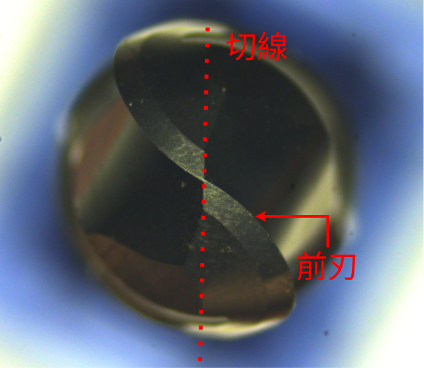
圖 12、球頭刀上視圖
將刀具拉桿朝下後找尋LED燈號，向左數第二個標記刻度為位置CH3，然後將刀具的後刃的切線延伸對應至刀把的CH3位置(如圖 13)。
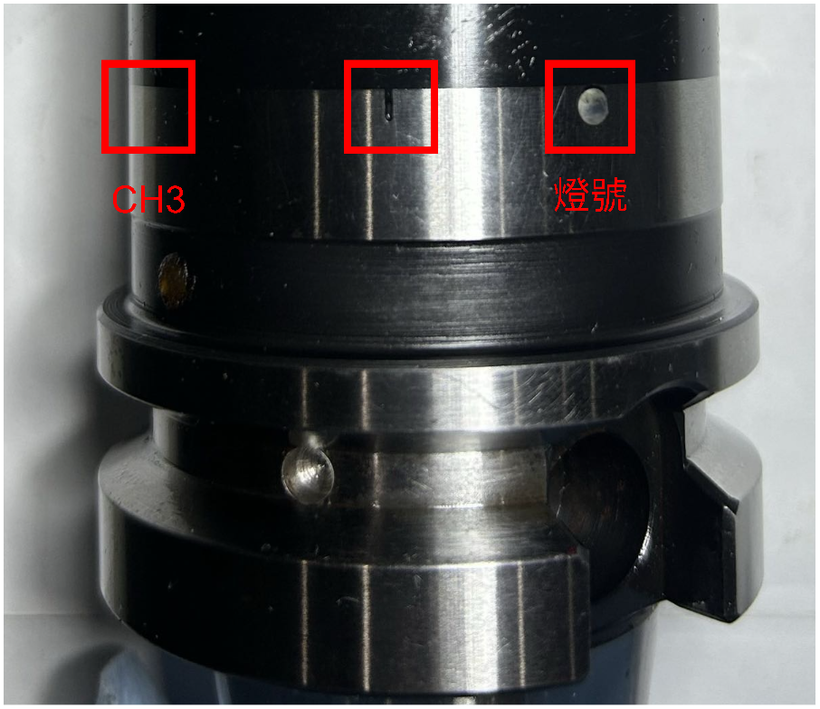
圖 13、刀具對應刀把CH3位置
加工前之工單設定
設定加工所需的工單內容，以記事本或是任意文字編譯器來開啟副檔名為yaml的檔案(如圖 14)，其檔案名稱由刀把編號_地點-月-日-年組成。
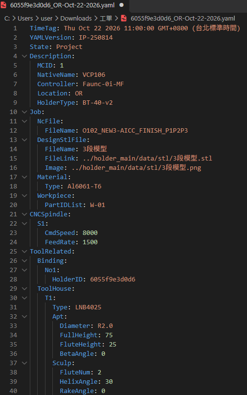
圖 14、開啟並編輯工單內容
根據工單對應欄位輸入所對應的加工資訊(如表 4)，也可以直接複製表 5後進行修改。
表 4、工單欄位說明
| 欄位 | 範例格式 | 說明 |
|---|---|---|
| TimeTag | Wed Sep 9 2026 13:46:42 GMT+0800 (台北標準時間) | 加工的日期 |
| YAMLVersion | IP-250814 | YAML版本編號 |
| State | Project | 狀態 |
| Description | 機台相關描述 | |
| MCID | 1 | 機台的編號 |
| NativeName | VCP106 | 機台的名稱 |
| Controller | Faunc-0i-MF | 控制器的型號 |
| Location | OR | 加工地點縮寫 |
| HolderType | BT-40-v2 | 夾頭對應的刀把型號 |
| Job | 加工的內容 | |
| NcFile | 加工程式 | |
| FileName | O102_NEW3-AICC_FINISH_P1P2P3 | 程式名稱 |
| DesignStlFile | 工件STL檔案 | |
| FileName | 3段模型 | 工件STL檔案名稱 |
| FileLink | ../holder_main/data/stl/3段模型.stl | 檔案在機邊設備的路徑位置 |
| Image | ../holder_main/data/stl/3段模型.png | 圖檔在機邊設備的路徑位置 |
| Material | 工件材料 | |
| Type | Al6061-T6 | 材料規格 |
| Workpiece | 工件 | |
| PartIDList | W-01 | 工件編號 |
| CNCSpindle | CNC主軸相關資訊 | |
| CmdSpeed | 8000 | 主軸轉速 |
| FeedRate | 1500 | 進給速度 |
| ToolRelated | 刀具相關資訊 | |
| HolderID | 6055f9e3d0d6 | 刀把的MAC號碼 |
| ToolHouse | 刀具庫 | |
| T1 | T1刀 | |
| Type | LNB4025 | 刀具型號 |
| Apt | 規格 | |
| Diameter | R2.0 | 刀具直徑 |
| FullHeight | 75 | 刀具全長 |
| FluteHeight | 25 | 刀具有效切削長度 |
| BetaAngle | 0 | 刀刃傾角 |
| Sculp | 樣式形狀 | |
| FluteNum | 2 | 刀刃數 |
| HelixAngle | 30 | 螺旋角 |
| RakeAngle | 0 | 前角 |
表 5、工單範例
| TimeTag: Thu Oct 22 2026 11:00:00 GMT+0800 (台北標準時間) / YAMLVersion: IP-250814 / State: Project / Description: / MCID: 1 / NativeName: VCP106 / Controller: Faunc-0i-MF / Location: OR / HolderType: BT-40-v2 / Job: / NcFile: / FileName: O102_NEW3-AICC_FINISH_P1P2P3 / DesignStlFile: / FileName: 3段模型 / FileLink: ../holder_main/data/stl/3段模型.stl / Image: ../holder_main/data/stl/3段模型.png / Material: / Type: Al6061-T6 / Workpiece: / PartIDList: W-01 / CNCSpindle: / S1: / CmdSpeed: 8000 / FeedRate: 1500 / ToolRelated: / Binding: / No1: / HolderID: 6055f9e3d0d6 / ToolHouse: / T1: / Type: LNB4025 / Apt: / Diameter: R2.0 / FullHeight: 75 / FluteHeight: 25 / BetaAngle: 0 / Sculp: / FluteNum: 2 / HelixAngle: 30 / RakeAngle: 0 |
|---|
加工中連線UI
在電腦的網頁上輸入http://10.0.0.103:8051/後，即可進入連線的UI介面。
首先介紹UI連線的簡易流程圖(如圖 15)，說明加工監控系統的操作流程。使用者透過Manage Part Files管理工件檔案，使用Upload Work Order上傳工單，並透過Select Work Order選擇所需工單，再利用Link STH完成智慧刀把與工單的關聯。
完成前置設定後，系統依加工設備分為兩種操作模式：
有控制器模式：依序執行Send CNC IP、Connect CNC，建立CNC控制器連線後操作機台加工，並記錄加工數據。
無控制器模式：透過Manual Start與Manual End手動控制加工資料的記錄起始與結束。
兩種模式皆會將加工數據保存至Order Outcome，後續可透過Generate Report產生加工分析報告，並使用Download Outcome下載加工結果，完成加工監控與資料管理流程。
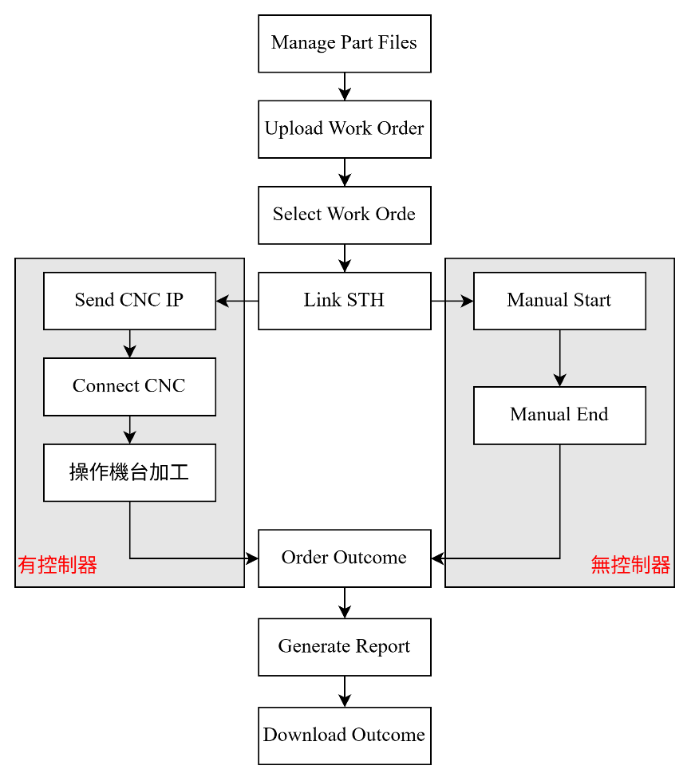
圖 15、連線UI簡易流程圖
視窗上方的面板(如圖 16)主要用於顯示設備的即時資訊、通訊連線狀態及加工監控結果，依照畫面由左至右，可分為四個功能區塊。
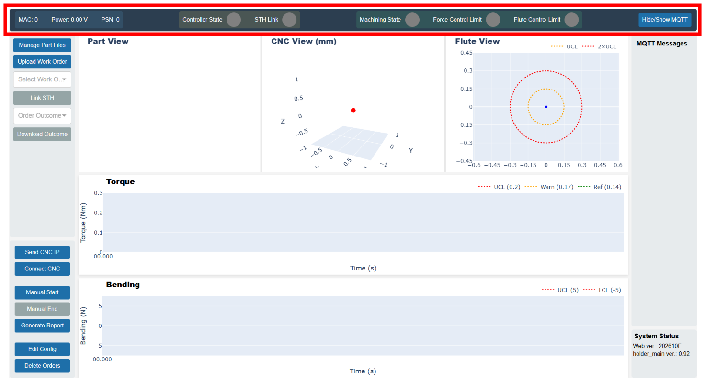
圖 16、UI視窗上方面板
MQTT資訊(如圖 17)：MAC顯示目前連線智慧刀把的編號；Power顯示智慧刀把回傳的電源電壓；PSN表示封包序號，用於追蹤接收到的資料封包。
圖 17、MQTT資訊
設備連線狀態(如圖 18)：Controller State顯示CNC控制器的通訊連線狀態，用於確認系統是否正常接收控制器資訊；STH Link顯示智慧刀把的連線狀態，用於確認系統是否正常接收智慧刀把資料。
圖 18、設備連線狀態燈號
加工監控狀態(如圖 19)：Machining State顯示目前加工週期的執行狀態，區分加工中與非加工狀態；Force Control Limit顯示加工受力監控結果，用於提示Torque監控數值是否達到設定的管制界線；Flute Control Limit顯示刃形圖監控結果，用於提示刀刃相關監測數值是否達到設定的管制界線。
圖 19、加工監控狀態燈號
MQTT訊息顯示控制(如圖 20)：位於頂部面板最右側的Hide/Show MQTT按鈕，用於切換右側MQTT訊息面板的顯示與隱藏，讓操作人員能依照需求調整監控畫面的可視範圍。
圖 20、MQTT訊息顯示控制按鈕
左側面板(如圖 21)主要提供工單管理、設備連線、加工控制、報告生成與系統設定功能，依照畫面由上至下，可分為四個功能區塊。
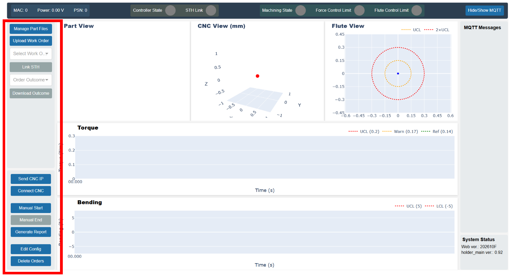
圖 21、UI視窗左側面板
工件與工單管理功能(如圖 22)：
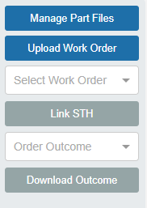
圖 22、工件與工單管理
Manage Part Files用於管理工件相關檔案，可上傳或刪除STL模型與PNG圖片檔案(如圖 23)。
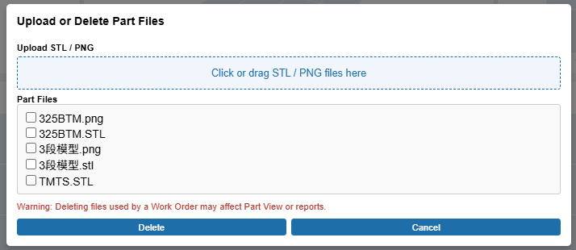
圖 23、工件檔案管理
Upload Work Order上傳YAML格式的工單，供系統載入加工資訊(如圖 24)。
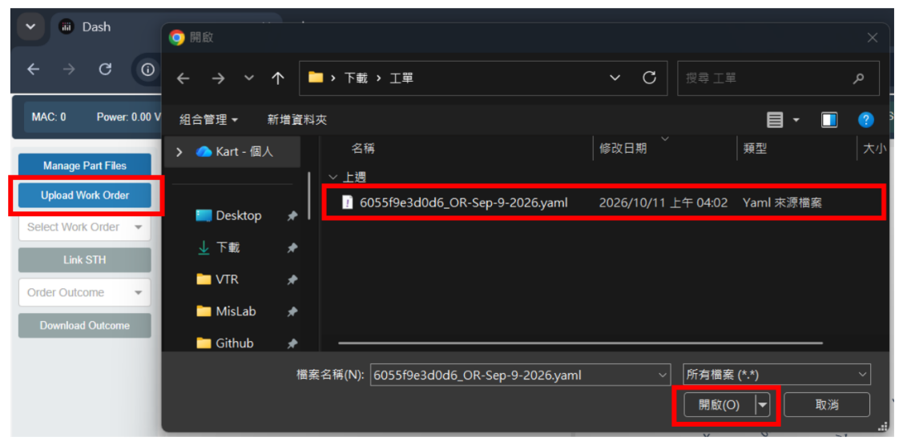
圖 24、上傳工單
Select Work Order透過下拉選單來選擇已存在的工單(如圖 25(a))，並顯示對應的加工參數(如圖 25(b))。
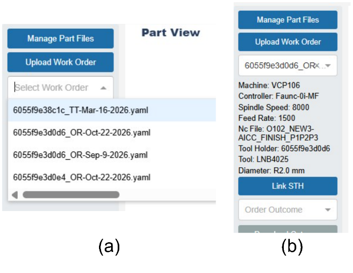
圖 25、(a)選擇工單 (b)顯示加工參數
Link STH用於執行智慧刀把與工單的關聯操作，傳送工單指定的HolderID至MQTT topic(如圖 26)。
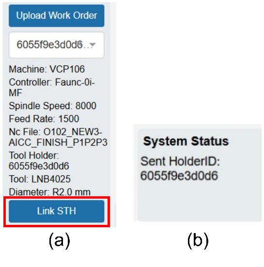
圖 26、(a)點擊Link STH (b)發送HolderID
Order Outcome用於選擇要下載的檔案，將於後續3.5節作介紹。
Download Outcome用於下載檔案至電腦，將於後續3.5節作介紹。
FANUC控制器連線功能(如圖 27)：
圖 27、FANUC控制器連線
- Send CNC IP用於發送FANUC控制器的IP位址，供連線程式使用(如圖 28)。
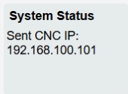
圖 28、發送控制器IP位址
- Connect CNC用於執行FANUC控制器的連線操作，以建立機邊與控制器之間的通訊(如圖 29)。
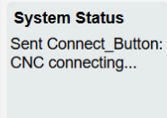
圖 29、執行控制器連線
加工控制與報告生成(如圖 30)：
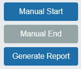
圖 30、加工控制與報告生成
Manual Start用於手動連線刀把，並記錄加工資料。
Manual End用於手動停止刀把連線，並儲存加工資料。
Generate Report用於產生加工報告，將於後續3.5節作介紹。
系統設定與資料管理(如圖 31)：
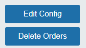
圖 31、系統設定與資料管理
- Edit Config用於開啟系統設定視窗(如圖 32)，可於Select Work Order選擇工單後於Work Order進行編輯修改。
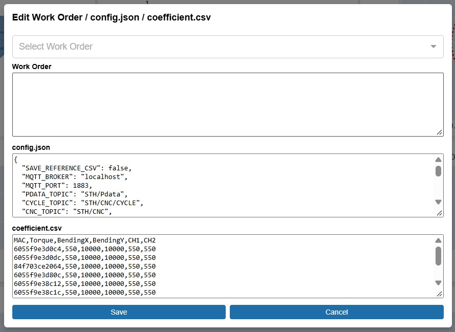
圖 32、系統設定視窗
- config.json負責系統資訊、MQTT發送、檔案路徑、控制器IP位址以及管制界線等設定的修改(如圖 33)。
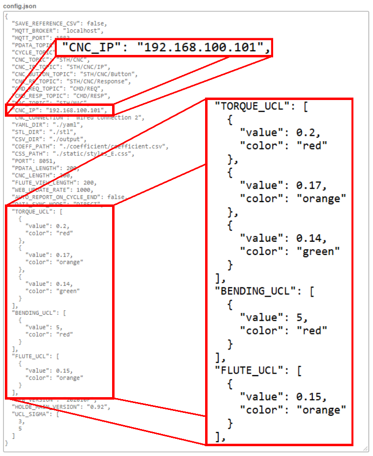
圖 33、修改系統設定
-
coefficient.csv用於設定與修改刀把應變規的係數倍率檔案。
-
Delete Orders用於開啟刪除視窗，可以刪除工單與加工資料(如圖 34)。
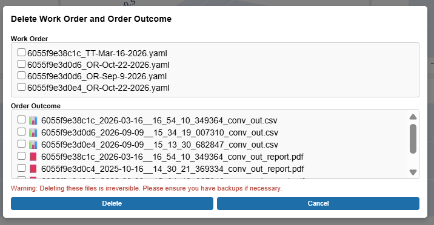
圖 34、刪除視窗
中央面板(如圖 35)顯示工件三維模型、CNC座標、刃形圖以及Torque與Bending訊號，依照畫面配置可分為上方三個視覺化區域與下方兩個監控圖表。
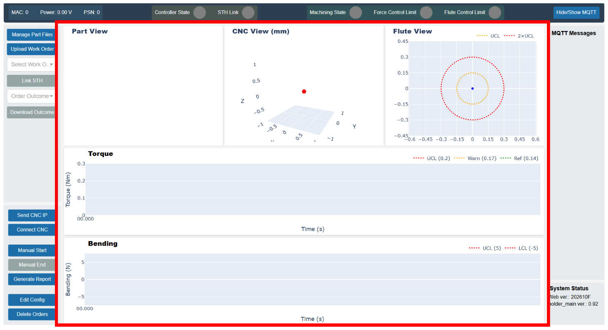
圖 35、UI視窗中央面板
Part View：顯示工單所指定的工件三維模型(如圖 36)，支援模型旋轉、縮放及視角調整，方便操作人員觀察工件的外觀與幾何特徵。
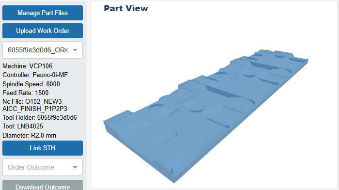
圖 36、工件三維模型
CNC View (mm)：顯示CNC控制器回傳的三軸(X、Y、Z)座標資訊(如圖 37)，透過三維座標圖呈現加工位置，協助操作人員觀察加工過程中的座標變化。
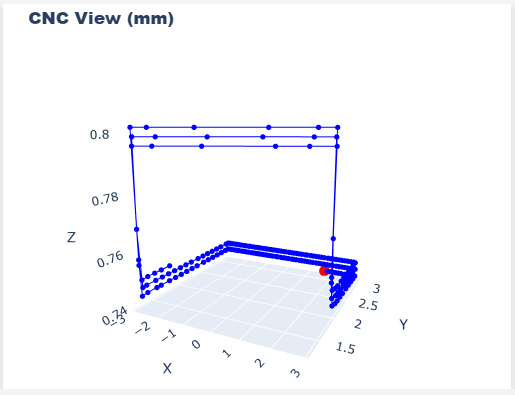
圖 37、控制器三軸座標
Flute View：透過二維座標圖呈現刃形監控結果(如圖 38)，以橘色虛線圓表示管制界線、紅色虛線圓表示兩倍管制界線，協助操作人員判斷監測數值是否超出設定範圍。
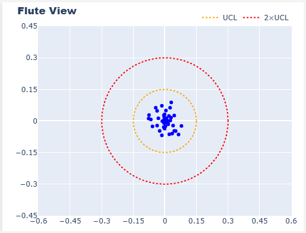
圖 38、刃形圖
Torque：用於即時顯示扭矩訊號(如圖 39)，橫軸為時間(s)，縱軸為扭矩(Nm)；圖中設有UCL、Warn及Ref三種管制界線，分別表示扭矩上限、警告線及參考線。
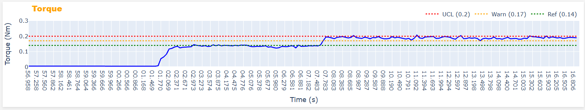
圖 39、Torque監控圖
Bending：用於即時顯示彎曲力訊號(如圖 40)，橫軸為時間(s)，縱軸為彎曲力(N)；圖中設有上限UCL與下限LCL，協助操作人員監控加工過程中的側向受力變化。
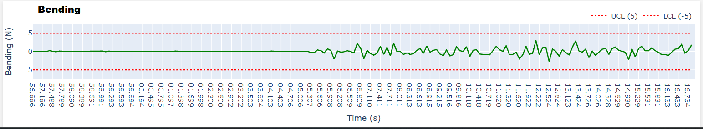
圖 40、Bending監控圖
右側面板(如圖 41)用於顯示MQTT訊息與系統運作狀態，方便操作人員確認資料傳輸情形及系統執行結果，依照畫面由上至下，可分為兩個功能區塊。
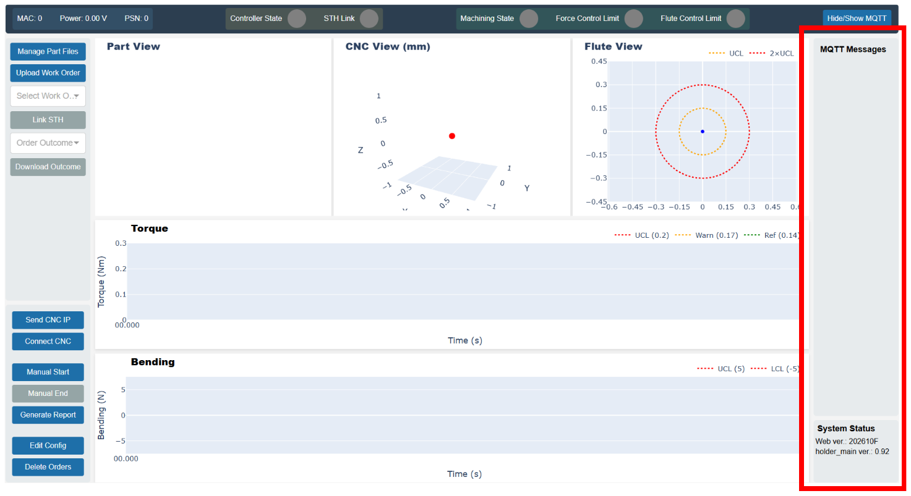
圖 41、UI視窗右側面板
MQTT Messages：用於顯示系統接收到的MQTT資訊(如圖 42)，包含刀把的編號(MAC)、電壓(Power)、溫度(Temperature)、封包序號(Packet Sequence Number)、WiFi訊號強度(RSSI)、封包延遲時間(TTOLP)、扭矩訊號(Torque)、切削力訊號(Bending)、刃形訊號(CH1/CH2)與時間(timetag)等資訊。
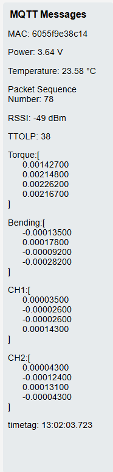
圖 42、MQTT資訊
System Status：用於顯示系統運作相關資訊及系統版本資訊(如圖 43)。
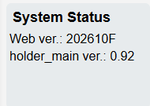
圖 43、系統資訊
加工履歷輸出
延續前面章節執行完加工後，可以選擇是否建立加工報表，建立完成後再與加工資料一起下載至電腦，執行步驟如下(如圖 44)：
於Select Work Order確認本次加工的工單。
於Order Outcome選擇本次的加工結果。
點擊Generate Report產生加工報告，整理加工期間所記錄的資料與分析結
果，等待加工報告生成完畢(如圖 45)。
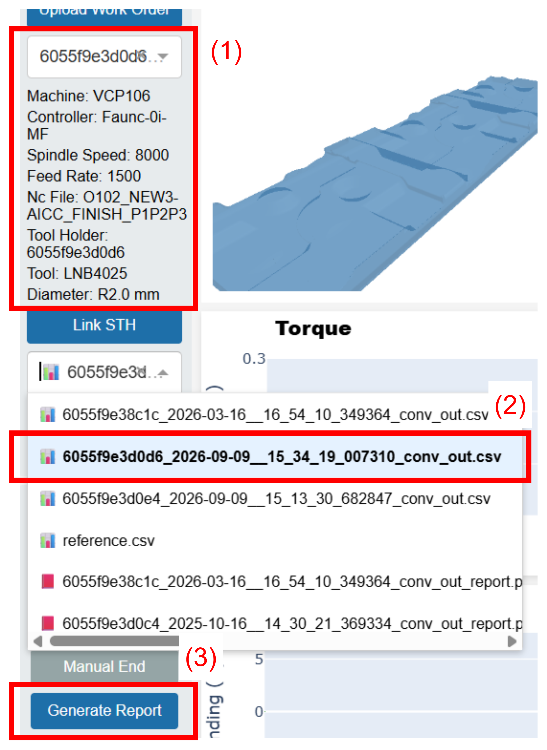
圖 44、建立加工報表
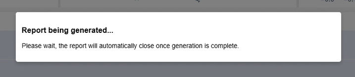
圖 45、等待加工報告生成
於Order Outcome選擇要下載的資料後，點擊Download Outcome即可
下載(如圖 46)。
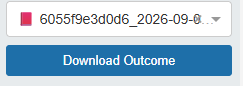
圖 46、下載檔案
加工資料以及報表分別為csv與pdf格式(如圖 47)，並且命名方式為刀把編號加上時間戳記。
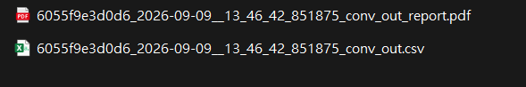
圖 47、加工資料與報表
加工資料csv(如圖 48)裡面包含七個欄位的資料(TimeTag、CH1、CH2、BendingX、BendingY、Torque、TempRaw)，其中TempRaw為溫度的原始資料，只有一項數值，需經過公式轉換為攝氏溫度。
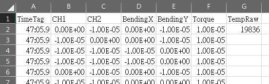
圖 48、加工資料
加工報表pdf(如圖 49)裡面包含了四個區塊：
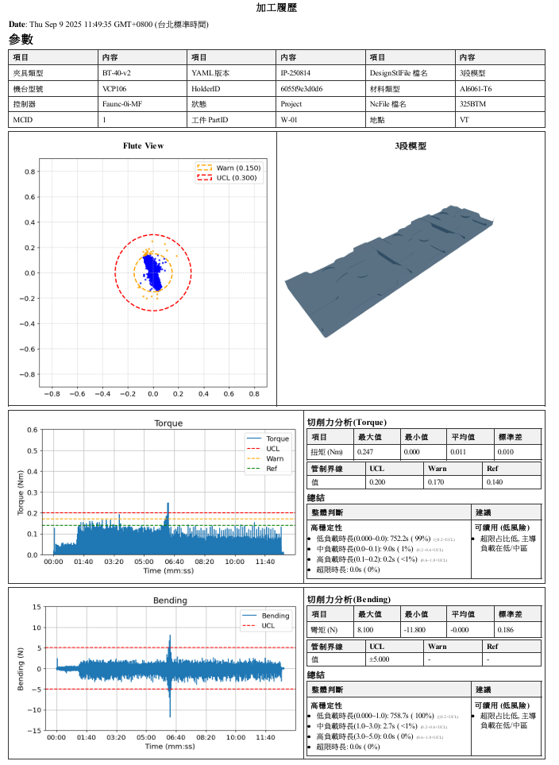
圖 49、加工報表
從工單讀取的加工參數(如圖 50)。
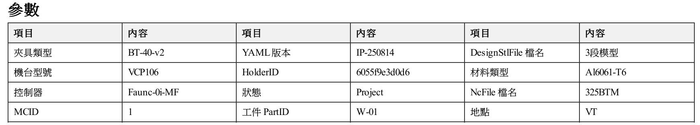
圖 50、加工參數
加工刃形圖以及工件檔案(如圖 51)。
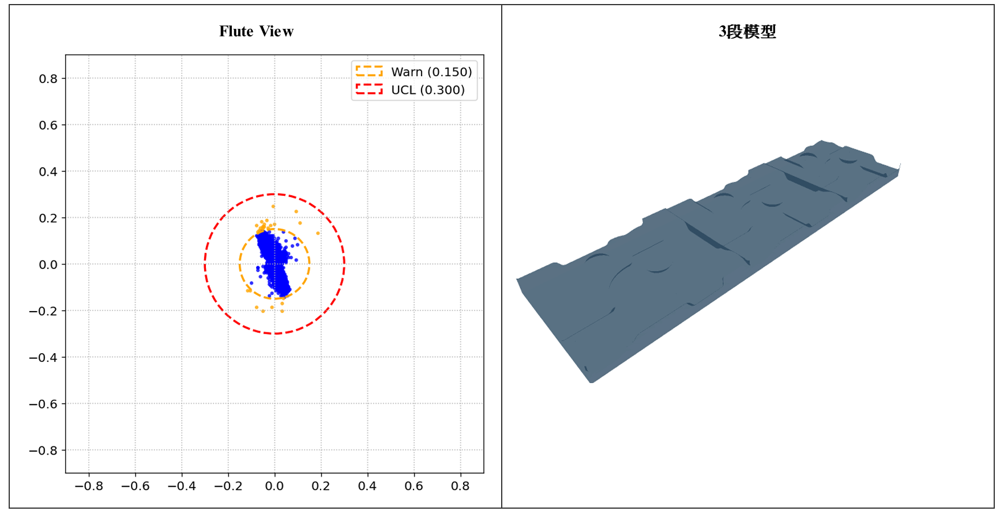
圖 51、刃形圖與工件
Torque訊號、管制界線以及分析結果(如圖 52)。
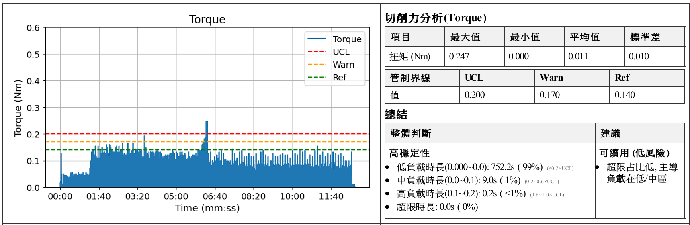
圖 52、Torque訊號分析結果
Bending訊號、管制界線以及分析結果(如圖 53)。
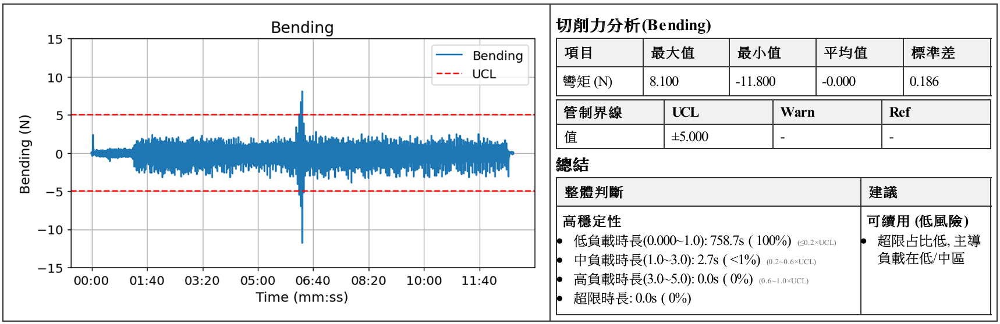
圖 53、Bending訊號分析結果